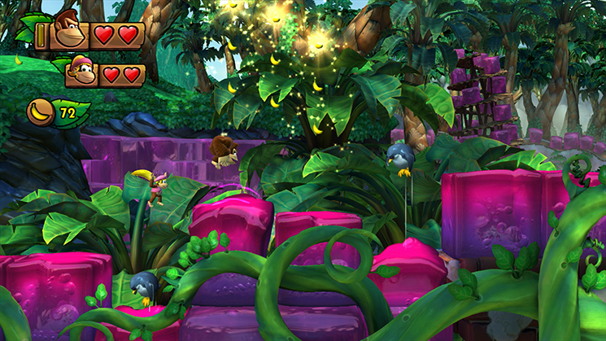

I bet you wouldn't look at that silly face and immediately think "yeah, this guy's games are some of the most immaculately designed and hardest platformers Nintendo's every put out", huh? This game always found some way to pull the rug under me and challenge me, and have a ton of detail and charm while doing so.
I wouldn't "just" say it's immaculately designed, it's practically original the Mario Wonder. There's fantasic level design, with each level doing something new, be it spawling savannahs, beautiful beaches, or jelly jungles. It also tons detail and charm in every level, like how there's not a single platform in this game that isn't suspended or being launched by something, or how expressive the everyone-even mooks are. This all boistered with a nice artsyle and a clean 60 FPS, handheld or docked.
The game also can also be pretty hard, but it's never unfair. It has a generous checkpoint and lives system, and also power up-like Kongs that give you extra health or abilities like a hover for Diddy. New to the Switch version is Funky Mode, the game's take on a easy mode, without removing the hard core of the game like Yoshi. He's all of the Kongs at once and has extra health, that's it. He's actually a Godsend addition for Time Attack modes (something that's pretty well supported, by the way).
While this is a decent run on its own, at about 10 hours on a normal run. It becomes far bigger when you try to get everything: collecting every level's KONG letters and all 9 puzzle pieces, complete all of the hidden levels, unlock all of the secret exits, and do it all on Hard Mode. Finding these is no easy task and practically a challenge in it of itself, all levels feature hidden spots, especially tight platoforming sequences, bonus minigame rooms, and even some puzzles in order to get them all.
I consider this an all around solid run that any gamer should have. However if you have the Wii U version already and are willing to wipe some dust there's not a lot of reasons to buy the Switch version.